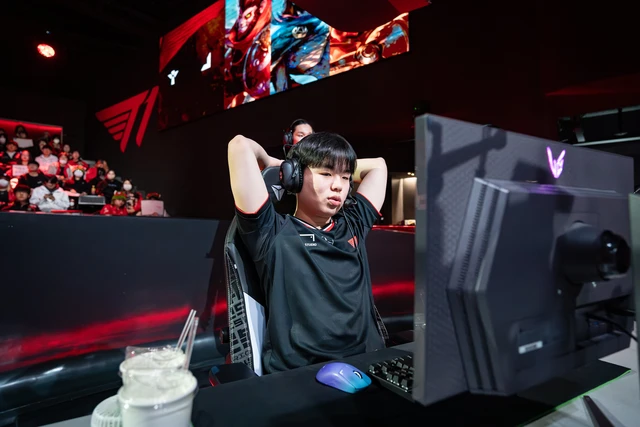

Chính "người được chọn" biến lời nói của CEO T1 thành "trò cười"
Chính "người được chọn" lại khiến những tuyên bố của CEO T1 không khác trò đùa.
Giữa dòng drama, chính "người được chọn" đã biến lời nói của CEO T1 thành "trò cười"
Theo những gì CEO T1 chia sẻ mới nhất và hiện đang gây tranh cãi trên nhiều mặt trận mạng xã hội, việc các HLV của T1 chọn Smash để thay thế Gumayusi là vì phong độ của tuyển thủ này tốt và khi được BHL đề xuất thử nghiệm, Smash đã "thể hiện ấn tượng" để phía T1 tiếp tục sử dụng tuyển thủ này ở Regular Seasons và biến T1 thành một đội hình 6 người. Nhưng thực tế, cũng chính màn thể hiện của Smash lại gần như đối lập hoàn toàn với khẳng định của CEO T1.
Đầu tiên, từng có không ít khán giả bị choáng ngợp vì số mạng hạ gục của Smash. Điều này thực tế giúp chỉ số KDA của Xạ Thủ này vô cùng đẹp, thậm chí đẹp hơn cả Viper hay Ruler - những Xạ Thủ góp mặt ở trận chung kết tổng LCK Cup 2025. Tuy nhiên, những con số này lại mang hàm ý mỉa mai nếu nhìn tổng thể màn trình diễn của Smash và sẽ không thể gọi đó là "màn thể hiện ấn tượng".
Cụ thể, chỉ số chuyển hóa sát thương và tỷ lệ sát thương gây ra của Smash cực kỳ thấp, thậm chí thấp hơn cả Deokdam. Ngoài ra, dù lượng chỉ số lính lớn, nhưng lượng DPM (sát thương/phút) của Smash lại thấp. Chứng tỏ: Xạ Thủ này chỉ có thể "farm" bù và gần như không có giai đoạn đi đường đủ tốt. Anh không gây khó được cho đối thủ và ngay cả khi vào giao tranh cũng không thể hiện được gì ngoại trừ việc... lấy mạng hạ gục.
Hơn nữa, ngay trong chính các trận T1 thắng, màn trình diễn của Smash cũng chỉ ở mức chấp nhận được, và đó là khi anh sử dụng các tướng như Kai'Sa hay Zeri. Cần phải nhấn mạnh: vị tướng "sở đoản" của Gumayusi - Ezreal - vào tay Smash, tuyển thủ vốn từng được không ít khán giả nhận định chơi Ezreal hay hơn Gumayusi, lại chỉ có tỷ lệ thắng 0% trong 2 ván đấu. Một trong số đó là trước đối thủ yếu KT.
Ngoài ra, trận đấu với HLE dù T1 có thể kéo đến ván 5, nhưng đó là nhờ màn thể hiện tuyệt đối xuất sắc của Faker - Oner ở ván 4. Những màn trừng phạt 50-50 đạt tỷ lệ thắng gần như tuyệt đối của Oner chính là tiền đề giúp T1 có thể vượt lên HLE ở ván đấu bản lề quan trọng.
Bây giờ, mọi chuyện đều có thể xảy ra với T1
Rõ ràng, màn thể hiện của Smash, nói nhẹ nhàng là "phụ lại lòng tin của BHL T1" nhưng nếu thẳng thắn, sẽ là một "cú tát" cực mạnh vào chính những chia sẻ của vị CEO. Nhưng ở thời điểm hiện tại, T1 đã lựa chọn. Và chính vì vậy, có lẽ fan của đội tuyển này cần chuẩn bị cho mọi tình huống có thể xảy ra, hơn là tiếp tục những tranh cãi không hồi kết nhưng cũng không có nhiều ý nghĩa.